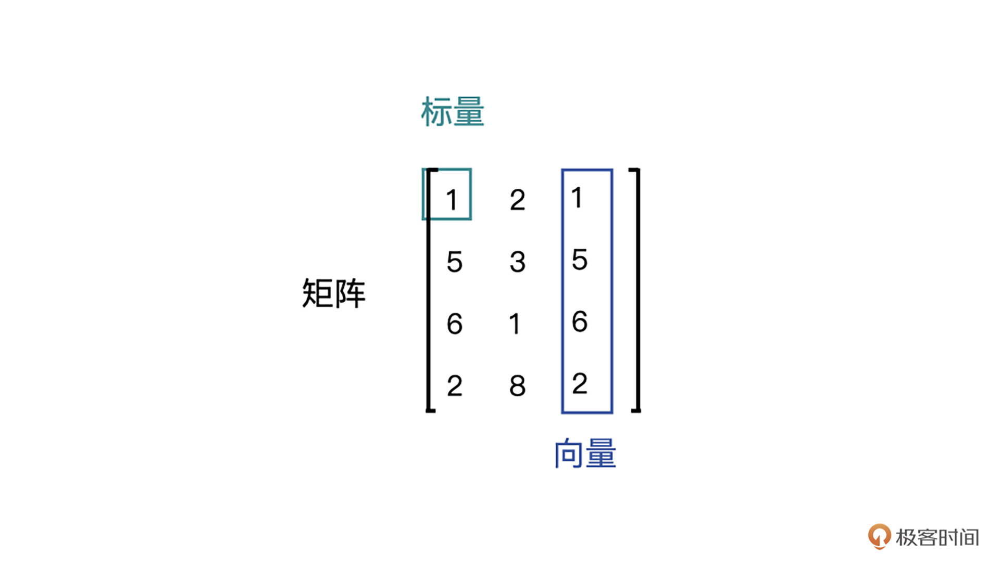
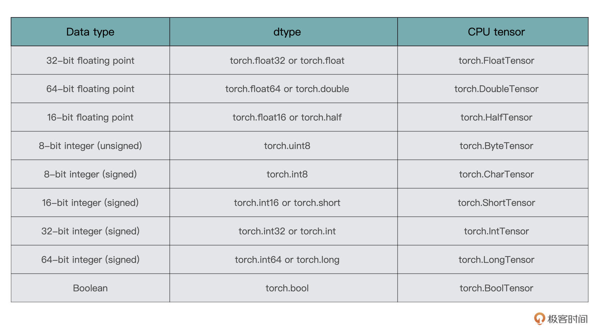
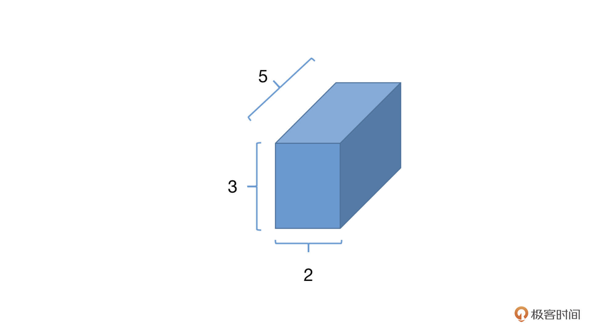
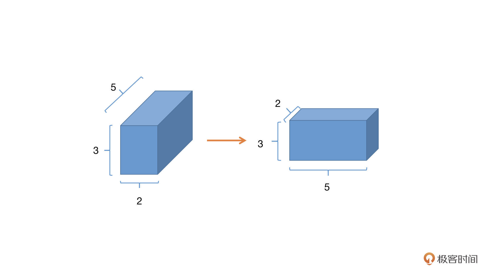

- 00 开篇词 如何高效入门PyTorch？.md.html
- 01 PyTorch：网红中的顶流明星.md.html
- 02 NumPy（上）：核心数据结构详解.md.html
- 03 NumPy（下）：深度学习中的常用操作.md.html
- 04 Tensor：PyTorch中最基础的计算单元.md.html
- 05 Tensor变形记：快速掌握Tensor切分、变形等方法.md.html
- 06 Torchvision（上）：数据读取，训练开始的第一步.md.html
- 07 Torchvision（中）：数据增强，让数据更加多样性.md.html
- 08 Torchvision（下）：其他有趣的功能.md.html
- 09 卷积（上）：如何用卷积为计算机“开天眼”？.md.html
- 10 卷积（下）：如何用卷积为计算机“开天眼”？.md.html
- 11 损失函数：如何帮助模型学会“自省”？.md.html
- 12 计算梯度：网络的前向与反向传播.md.html
- 13 优化方法：更新模型参数的方法.md.html
- 14 构建网络：一站式实现模型搭建与训练.md.html
- 15 可视化工具：如何实现训练的可视化监控？.md.html
- 16 分布式训练：如何加速你的模型训练？.md.html
- 17 图像分类（上）：图像分类原理与图像分类模型.md.html
- 18 图像分类（下）：如何构建一个图像分类模型_.md.html
- 19 图像分割（上）：详解图像分割原理与图像分割模型.md.html
- 20 图像分割（下）：如何构建一个图像分割模型？.md.html
- 21 NLP基础（上）：详解自然语言处理原理与常用算法.md.html
- 22 NLP基础（下）：详解语言模型与注意力机制.md.html
- 23 情感分析：如何使用LSTM进行情感分析？.md.html
- 24 文本分类：如何使用BERT构建文本分类模型？.md.html
- 25 摘要：如何快速实现自动文摘生成？.md.html
- 加餐 机器学习其实就那么几件事.md.html
- 用户故事 Tango：师傅领进门，修行在个人.md.html
- 答疑篇 思考题答案集锦.md.html
- 结束语 人生充满选择，选择与努力同样重要.md.html
- 捐赠
04 Tensor：PyTorch中最基础的计算单元
在上节课中，我们一起学习了NumPy的主要使用方法和技巧，有了NumPy我们可以很好地处理各种类型的数据。而在深度学习中，数据的组织则更进一步，从数据的组织，到模型内部的参数，都是通过一种叫做张量的数据结构进行表示和处理。
今天我们就来一块儿了解一下张量（Tensor），学习一下Tensor的常用操作。
什么是Tensor
Tensor是深度学习框架中极为基础的概念，也是PyTroch、TensorFlow中最重要的知识点之一，它是一种数据的存储和处理结构。
回忆一下我们目前知道的几种数据表示：
- 标量，也称Scalar，是一个只有大小，没有方向的量，比如1.8、e、10等。
- 向量，也称Vector，是一个有大小也有方向的量，比如(1,2,3,4)等。
- 矩阵，也称Matrix，是多个向量合并在一起得到的量，比如[(1,2,3),(4,5,6)]等。
为了帮助你更好理解标量、向量和矩阵，我特意准备了一张示意图，你可以结合图片理解。- 
不难发现，几种数据表示其实都是有着联系的，标量可以组合成向量，向量可以组合成矩阵。那么，我们可否将它们看作是一种数据形式呢？
答案是可以的，这种统一的数据形式，在PyTorch中我们称之为张量(Tensor)。从标量、向量和矩阵的关系来看，你可能会觉得它们就是不同“维度”的Tensor，这个说法对，也不全对。
说它不全对是因为在Tensor的概念中，我们更愿意使用Rank（秩）来表示这种“维度”，比如标量，就是Rank为0阶的Tensor；向量就是Rank为1阶的Tensor；矩阵就是Rank为2阶的Tensor。也有Rank大于2的Tensor。当然啦，你如果说维度其实也没什么错误，平时很多人也都这么叫。
说完Tensor的含义，我们一起看一下Tensor的类型，以及如何创建Tensor。
Tensor的类型、创建及转换
在不同的深度学习框架下，Tensor呈现的特点大同小异，我们使用它的方法也差不多。这节课我们就以PyTorch中的使用方法为例进行学习。
Tensor的类型
在PyTorch中，Tensor支持的数据类型有很多种，这里列举较为常用的几种格式：

一般来说，torch.float32、torch.float64、torch.uint8和torch.int64用得相对较多一些，但是也不是绝对，还是要根据实际情况进行选择。这里你有个印象就行，后面课程用到时我还会进一步讲解。
Tensor的创建
PyTorch对于Tensor的操作已经非常友好了，你可以通过多种不同的方式创建一个任意形状的Tensor，而且每种方式都很简便，我们一起来看一下。
直接创建
首先来看直接创建的方法，这也是最简单创建的方法。我们需要用到下面的torch.tensor函数直接创建。
torch.tensor(data, dtype=None, device=None,requires_grad=False)
结合代码，我们看看其中的参数是什么含义。- 我们从左往右依次来看，首先是data，也就是我们要传入模型的数据。PyTorch支持通过list、 tuple、numpy array、scalar等多种类型进行数据传入，并转换为tensor。
接着是dtype，它声明了你需要返回一个怎样类型的Tensor，具体类型可以参考前面表格里列举的Tensor的8种类型。
然后是device，这个参数指定了数据要返回到的设备，目前暂时不需要关注，缺省即可。
最后一个参数是requires_grad，用于说明当前量是否需要在计算中保留对应的梯度信息。在PyTorch中，只有当一个Tensor设置requires_grad为True的情况下，才会对这个Tensor以及由这个Tensor计算出来的其他Tensor进行求导，然后将导数值存在Tensor的grad属性中，便于优化器来更新参数。
所以，你需要注意的是，把requires_grad设置成true或者false要灵活处理。如果是训练过程就要设置为true，目的是方便求导、更新参数。而到了验证或者测试过程，我们的目的是检查当前模型的泛化能力，那就要把requires_grad设置成Fasle，避免这个参数根据loss自动更新。
从NumPy中创建
还记得之前的课程中，我们一同学习了NumPy的使用，在实际应用中，我们在处理数据的阶段多使用的是NumPy，而数据处理好之后想要传入PyTorch的深度学习模型中，则需要借助Tensor，所以PyTorch提供了一个从NumPy转到Tensor的语句：
torch.from_numpy(ndarry)
有时候我们在开发模型的过程中，需要用到一些特定形式的矩阵Tensor，比如全是0的，或者全是1的。这时我们就可以用这个方法创建，比如说，先生成一个全是0的NumPy数组，然后转换成Tensor。但是这样也挺麻烦的，因为这意味着你要引入更多的包（NumPy），也会使用更多的代码，这会增加出错的可能性。- 不过你别担心，PyTorch内部已经提供了更为简便的方法，我们接着往下看。
创建特殊形式的Tensor
我们一块来看一下后面的几个常用函数，它们都是在PyTorch模型内部使用的。
- 创建零矩阵Tensor：零矩阵顾名思义，就是所有的元素都为0的矩阵。
torch.zeros(*size, dtype=None...)
其中，我们用得比较多的就是size参数和dtype参数。size定义输出张量形状的整数序列。- 这里你可能注意到了，在函数参数列表中我加入了省略号，这意味着torch.zeros的参数有很多。不过。咱们现在是介绍零矩阵的概念，形状相对来说更重要。其他的参数（比如前面提到的requires_grad参数）与此无关，现阶段我们暂时不关注。
- 创建单位矩阵Tensor：单位矩阵是指主对角线上的元素都为1的矩阵。
torch.eye(size, dtype=None...)
- 创建全一矩阵Tensor：全一矩阵顾名思义，就是所有的元素都为1的矩阵。
torch.ones(size, dtype=None...)
- 创建随机矩阵Tensor：在PyTorch中有几种较为经常使用的随机矩阵创建方式，分别如下。
torch.rand(size)
torch.randn(size)
torch.normal(mean, std, size)
torch.randint(low, high, size）
这些方式各自有不同的用法，你可以根据自己的需要灵活使用。
- torch.rand用于生成数据类型为浮点型且维度指定的随机Tensor，随机生成的浮点数据在 0~1 区间均匀分布。
- torch.randn用于生成数据类型为浮点型且维度指定的随机Tensor，随机生成的浮点数的取值满足均值为 0、方差为 1 的标准正态分布。
- torch.normal用于生成数据类型为浮点型且维度指定的随机Tensor，可以指定均值和标准差。
- torch.randint用于生成随机整数的Tensor，其内部填充的是在[low,high)均匀生成的随机整数。
Tensor的转换
在实际项目中，我们接触到的数据类型有很多，比如Int、list、NumPy等。为了让数据在各个阶段畅通无阻，不同数据类型与Tensor之间的转换就非常重要了。接下来我们一起来看看int、list、NumPy是如何与Tensor互相转换的。
- Int与Tensor的转换：
a = torch.tensor(1)
b = a.item()
我们通过torch.Tensor将一个数字（或者标量）转换为Tensor，又通过item()函数，将Tensor转换为数字（标量），item()函数的作用就是将Tensor转换为一个python number。
- list与tensor的转换：
a = [1, 2, 3]
b = torch.tensor(a)
c = b.numpy().tolist()
在这里对于一个list a，我们仍旧直接使用torch.Tensor，就可以将其转换为Tensor了。而还原回来的过程要多一步，需要我们先将Tensor转为NumPy结构，之后再使用tolist()函数得到list。
- NumPy与Tensor的转换：
有了前面两个例子，你是否能想到NumPy怎么转换为Tensor么？对，我们仍旧torch.Tensor即可，是不是特别方便。
- CPU与GPU的Tensor之间的转换：
CPU->GPU: data.cuda()
GPU->CPU: data.cpu()
Tensor的常用操作
好，刚才我们一起了解了Tensor的类型，如何创建Tensor，以及如何实现Tensor和一些常见的数据类型之间的相互转换。其实Tensor还有一些比较常用的功能，比如获取形状、维度转换、形状变换以及增减维度，接下来我们一起来看看这些功能。
获取形状
在深度学习网络的设计中，我们需要时刻对Tensor的情况做到了如指掌，其中就包括获取Tensor的形式、形状等。
为了得到Tensor的形状，我们可以使用shape或size来获取。两者的不同之处在于，shape是torch.tensor的一个属性，而size()则是一个torch.tensor拥有的方法。
>>> a=torch.zeros(2, 3, 5)
>>> a.shape
torch.Size([2, 3, 5])
>>> a.size()
torch.Size([2, 3, 5])

知道了Tensor的形状，我们就能知道这个Tensor所包含的元素的数量了。具体的计算方法就是直接将所有维度的大小相乘，比如上面的Tensor a所含有的元素的个数为2_3_5=30个。这样似乎有点麻烦，我们在PyTorch中可以使用numel()函数直接统计元素数量。
>>> a.numel()
30
矩阵转秩(维度转换）
在PyTorch中有两个函数，分别是permute()和transpose()可以用来实现矩阵的转秩，或者说交换不同维度的数据。比如在调整卷积层的尺寸、修改channel的顺序、变换全连接层的大小的时候，我们就要用到它们。
其中，用permute函数可以对任意高维矩阵进行转置，但只有 tensor.permute() 这个调用方式，我们先看一下代码：
>>> x = torch.rand(2,3,5)
>>> x.shape
torch.Size([2, 3, 5])
>>> x = x.permute(2,1,0)
>>> x.shape
torch.Size([5, 3, 2])

有没有发现，原来的Tensor的形状是[2,3,5]，我们在permute中分别写入原来索引位置的新位置，x.permute(2,1,0)，2表示原来第二个维度现在放在了第零个维度；同理1表示原来第一个维度仍旧在第一个维度；0表示原来第0个维度放在了现在的第2个维度，形状就变成了[5,3,2]
而另外一个函数transpose，不同于permute，它每次只能转换两个维度，或者说交换两个维度的数据。我们还是来看一下代码：
>>> x.shape
torch.Size([2, 3, 4])
>>> x = x.transpose(1,0)
>>> x.shape
torch.Size([3, 2, 4])
需要注意的是，经过了transpose或者permute处理之后的数据，变得不再连续了，什么意思呢？
还是接着刚才的例子说，我们使用torch.rand(2,3,4)得到的tensor，在内存中是连续的，但是经过transpose或者permute之后呢，比如transpose(1,0)，内存虽然没有变化，但是我们得到的数据“看上去”是第0和第1维的数据发生了交换，现在的第0维是原来的第1维，所以Tensor都会变得不再连续。
那你可能会问了，不连续就不连续呗，好像也没啥影响吧？这么想你就草率了，我们继续来看看Tensor的形状变换，学完以后你就知道Tensor不连续的后果了。
形状变换
在PyTorch中有两种常用的改变形状的函数，分别是view和reshape。我们先来看一下view。
>>> x = torch.randn(4, 4)
>>> x.shape
torch.Size([4, 4])
>>> x = x.view(2,8)
>>> x.shape
torch.Size([2, 8])
我们先声明了一个[4, 4]大小的Tensor，然后通过view函数，将其修改为[2, 8]形状的Tensor。我们还是继续刚才的x，再进行一步操作，代码如下：
>>> x = x.permute(1,0)
>>> x.shape
torch.Size([8, 2])
>>> x.view(4, 4)
Traceback (most recent call last):
File "<stdin>", line 1, in <module>
RuntimeError: view size is not compatible with input tensor's size and stride (at least one dimension spans across two contiguous subspaces). Use .reshape(...) instead.
结合代码可以看到，利用permute，我们将第0和第1维度的数据进行了变换，得到了[8, 2]形状的Tensor，在这个新Tensor上进行view操作，忽然就报错了，为什么呢？其实就是因为view不能处理内存不连续Tensor的结构。- 那这时候要怎么办呢？我们可以使用另一个函数，reshape：
>>> x = x.reshape(4, 4)
>>> x.shape
torch.Size([4, 4])
这样问题就迎刃而解了。其实reshape相当于进行了两步操作，先把Tensor在内存中捋顺了，然后再进行view操作。
增减维度
有时候我们需要对Tensor增加或者删除某些维度，比如删除或者增加图片的几个通道。PyTorch提供了squeeze()和unsqueeze()函数解决这个问题。
我们先来看squeeze()。如果dim指定的维度的值为1，则将该维度删除，若指定的维度值不为1，则返回原来的Tensor。为了方便你理解，我还是结合例子来讲解。
>>> x = torch.rand(2,1,3)
>>> x.shape
torch.Size([2, 1, 3])
>>> y = x.squeeze(1)
>>> y.shape
torch.Size([2, 3])
>>> z = y.squeeze(1)
>>> z.shape
torch.Size([2, 3])
结合代码我们可以看到，我们新建了一个维度为[2, 1, 3]的Tensor，然后将第1维度的数据删除，得到y，squeeze执行成功是因为第1维度的大小为1。然而在y上我们打算进一步删除第1维度的时候，就会发现删除失败了，这是因为y此刻的第1维度的大小为3，suqeeze不能删除。- unsqueeze()：这个函数主要是对数据维度进行扩充。给指定位置加上维数为1的维度，我们同样结合代码例子来看看。
>>> x = torch.rand(2,1,3)
>>> y = x.unsqueeze(2)
>>> y.shape
torch.Size([2, 1, 1, 3])
这里我们新建了一个维度为[2, 1, 3]的Tensor，然后在第2维度插入一个维度，这样就得到了一个[2,1,1,3]大小的tensor。
小结
之前我们学习了NumPy相关的操作，如果把NumPy和Tensor做对比，就不难发现它们之间有很多共通的内容，共性就是两者都是数据的表示形式，都可以看作是科学计算的通用工具。但是NumPy和Tensor的用途是不一样的，NumPy不能用于GPU加速，Tensor则可以。
这节课我们一同学习了Tensor的创建、类型、转换、变换等常用功能，通过这几个功能，我们就可以对Tensor进行最基本也是最常用的操作，这些都是必须要牢记的内容。
此外，在实际上，真正的项目实战中还有个非常多的操作种类，其中较为重要的是数学计算操作，比如加减乘除、合并、连接等。但是这些操作如果一个一个列举出来，数量极其繁多，你也会感觉很枯燥，所以在后续的课程中，咱们会在具体的实战环节来学习相关的数学操作。
下一节课的内容，咱们会对Tensor的变形、切分等高级操作进行学习，这是一个很好玩儿的内容，敬请期待。
每课一练
在PyTorch中，有torch.Tensor()和torch.tensor()两种函数，它们的区别是什么呢？
欢迎你在留言区和我交流，也推荐你把今天的内容分享给更多同事和朋友。
© 2019 - 2023 Liangliang Lee. Powered by gin and hexo-theme-book.